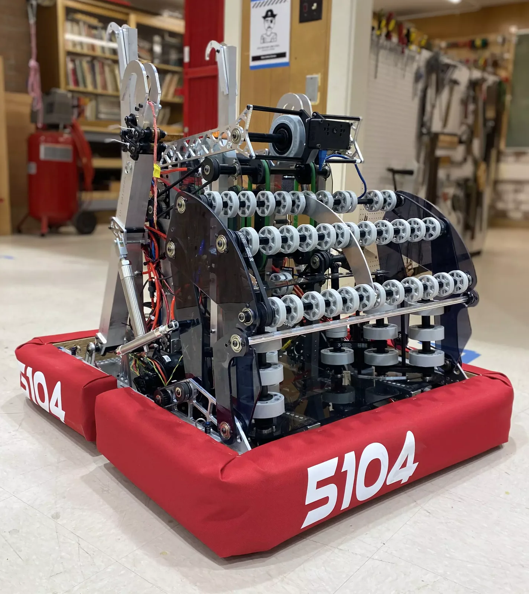

Charybdis
FIRST Robotics Competition: Rapid React
My Role
I CNC-milled 2×1 aluminum tubing, routed the bellypan, and made polycarbonate panels. The electronics cover was my first solo CNC job.

Charybdis was the team's 2022 robot, during my first year on manufacturing.
The robot
- 9 cycles per match on average
- Dual flywheel shooter at 6,000 RPM
- 4-bar linkage for the deployable full-width intake
- 18-flex-wheel indexer
- Telescoping climb for the mid, high, and traverse rungs
Awards
- Excellence in Engineering Award: Monterey Bay Regional
- Regional Finalist: Monterey Bay Regional
- 2nd Seed Alliance Captain: Monterey Bay Regional
- Regional Quarterfinalist: Port Hueneme
- 6th Seed Alliance Captain: Port Hueneme